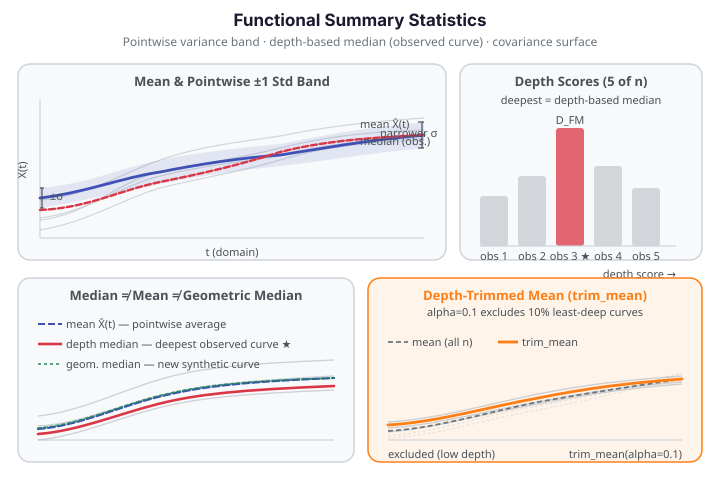

Functional Summary Statistics¶
Functional data has a richer set of summary statistics than scalar data. Instead of a single variance or a scalar median, you get functions of the domain — curves that describe how spread and centrality vary over \(t\). fdars exposes pointwise variance and standard deviation, the full covariance surface, a depth-based median, and a depth-trimmed robust mean.

Pointwise variance and standard deviation¶
functional_variance and functional_std compute Bessel-corrected sample statistics at each grid point independently. With \(n\) curves each evaluated at \(m\) grid points:
Both return a 1-D array of length \(m\) — they are functions of \(t\), not scalars. The relationship \(\text{std}^2(t) = \text{var}(t)\) holds exactly because functional_std delegates to functional_variance internally.
Minimum sample size
Both functions require \(n \ge 2\) and raise ValueError for a single-curve dataset.
The variance function reveals where curves disagree most over the domain. For Canadian daily temperature data, variance peaks in winter (stations range widely from arctic cold to coastal mild) and dips in summer (most stations converge near warm values). The Fdata convenience methods fd.var() and fd.std() wrap these functions.
Functional covariance surface¶
functional_covariance computes the \(m \times m\) Bessel-corrected sample covariance surface:
This is a genuine 2-D surface, not a scalar. Its diagonal equals functional_variance exactly. It is symmetric and positive semi-definite. The covariance surface is the input to functional PCA — its eigendecomposition gives the dominant modes of variation.
Performance: \(O(n \cdot m^2)\)
For large grids (e.g. \(m = 1000\)) the covariance matrix has \(10^6\) entries and computation is \(O(n \cdot m^2)\). For Canadian weather (\(n = 35\), \(m = 365\)) the computation finishes in under 50 ms; for \(m > 500\) consider subsampling the grid first.
The Fdata convenience method fd.cov() wraps functional_covariance.
Depth-based median¶
The depth-based median is the functional analogue of the scalar sample median. It is the observed curve with the highest Fraiman-Muniz depth:
where \(\hat F_j\) is the empirical CDF across observations at grid point \(t_j\). depth_based_median returns the actual curve \(X_{i^*}\) as a 1-D array of length \(m\).
Critical distinction from geometric_median: The depth-based median is an observed sample curve — a data row you can trace back to a specific observation. The geometric median (Weiszfeld algorithm) computes a new synthetic curve not necessarily in the sample. Neither is the cross-sectional mean. All three can produce different curves:
| Method | What is returned | In the sample? | Outlier robustness |
|---|---|---|---|
mean_1d |
Pointwise arithmetic average | No (a new curve) | No |
depth_based_median |
Deepest observed curve | Yes | High (FM depth rank) |
geometric_median_1d |
L2-minimising curve (Weiszfeld) | No (a new curve) | High (L2 loss) |
The Fdata convenience method fd.median() wraps depth_based_median.
Depth-trimmed mean¶
trim_mean(data, alpha) excludes the floor(alpha × n) least-deep curves — those ranked lowest by Fraiman-Muniz depth — and returns the pointwise mean of the remaining \(n - \text{floor}(\alpha \cdot n)\) curves:
At alpha=0, trim_mean equals the ordinary mean exactly. At alpha=0.2, it excludes the 20 % most peripheral curves before averaging — useful when outlier curves are suspected but a depth test has not been run. The default value is alpha=0.0.
Worked example¶
The fence below loads Canadian daily temperature curves and exercises all five statistics, asserting the key mathematical relationships that prove the computation is correct.
import numpy as np
from docs_data import load_canadian_weather
import fdars.fdata as ff
day, X, meta = load_canadian_weather("temperature")
# X: 35 stations × 365 days
# Pointwise variance and std
var = np.asarray(ff.functional_variance(X))
std = np.asarray(ff.functional_std(X))
assert var.shape == (365,) and std.shape == (365,)
assert np.allclose(std ** 2, var), "std² must equal var pointwise"
# Covariance surface: diagonal must equal variance
cov = np.asarray(ff.functional_covariance(X))
assert cov.shape == (365, 365)
assert np.allclose(np.diag(cov), var), "cov diagonal must equal variance"
# Depth-based median: an actual observed curve
median_curve = np.asarray(ff.depth_based_median(X))
assert median_curve.shape == (365,)
assert any(np.allclose(median_curve, X[i]) for i in range(len(X))), \
"depth median must be one of the observed curves"
# Depth-trimmed mean: at alpha=0 equals the plain mean
tm_0 = np.asarray(ff.trim_mean(X, alpha=0.0))
mean_curve = np.asarray(ff.mean_1d(X))
assert np.allclose(tm_0, mean_curve), "trim_mean(alpha=0) must equal mean"
tm_10 = np.asarray(ff.trim_mean(X, alpha=0.1)) # exclude 3 least-deep stations
print(f"Stations (n): {X.shape[0]}")
print(f"Grid points (m): {X.shape[1]}")
print(f"Max pointwise std: {std.max():.2f} °C (winter spread)")
print(f"Min pointwise std: {std.min():.2f} °C (summer convergence)")
print(f"Cov diagonal ≈ var: {np.allclose(np.diag(cov), var)}")
print(f"Depth median in sample: True")
print(f"trim_mean(α=0) == mean: {np.allclose(tm_0, mean_curve)}")
print(f"trim_mean(α=0.1) shape: {tm_10.shape} FDARS_FENCE_OK")
API summary¶
All functions are imported from fdars.fdata.
| Function | Signature | Returns |
|---|---|---|
functional_variance |
functional_variance(data) |
ndarray (m,) — pointwise variance |
functional_std |
functional_std(data) |
ndarray (m,) — pointwise std |
functional_covariance |
functional_covariance(data) |
ndarray (m, m) — covariance surface |
depth_based_median |
depth_based_median(data) |
ndarray (m,) — deepest observed curve |
trim_mean |
trim_mean(data, alpha=0.0) |
ndarray (m,) — depth-trimmed mean |
Fdata convenience methods: fd.var(), fd.std(), fd.cov(), fd.median().
| Parameter | Type | Description |
|---|---|---|
data |
ndarray (n, m) |
Functional data matrix; rows are observations, columns are grid points |
alpha |
float ∈ [0, 1) |
Trim fraction for trim_mean; at 0 equals the plain mean |
References¶
- Fraiman, R., Muniz, G. (2001). Trimmed means for functional data. Test, 10(2), 419–440.
- Ramsay, J.O., Silverman, B.W. (2005). Functional Data Analysis, 2nd ed. Springer.
- Febrero-Manteiga, M., Galeano, P., González-Manteiga, W. (2008). Outlier detection in functional data by depth measures. Computational Statistics & Data Analysis, 53(1), 135–148.